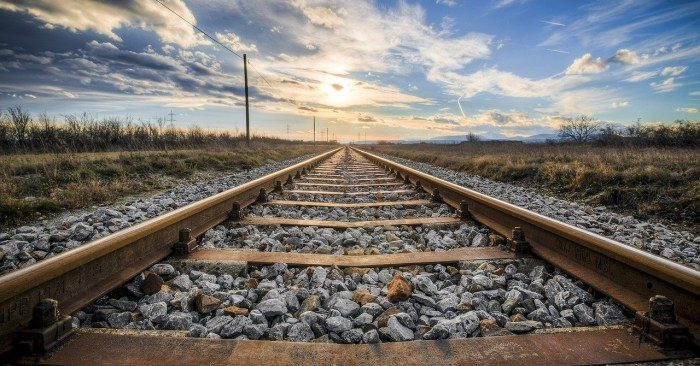
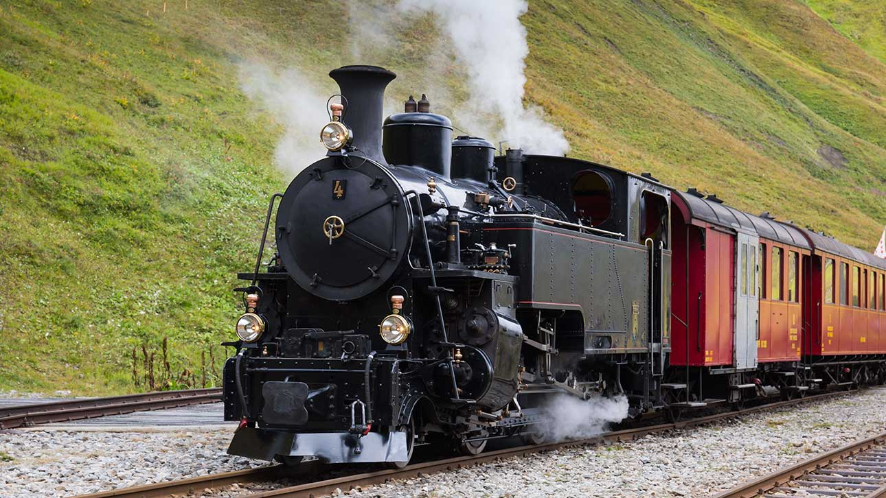
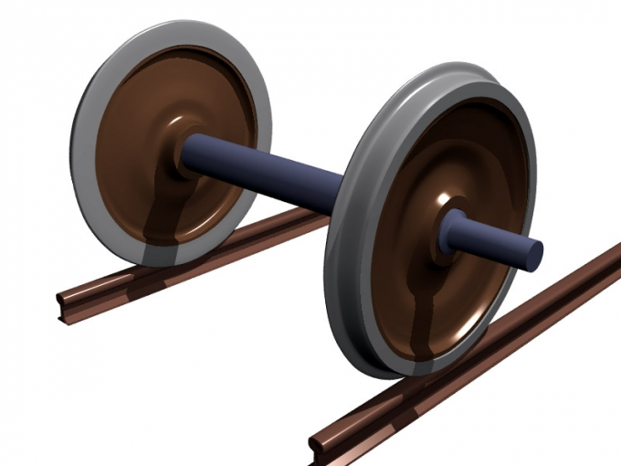

Đường Ray
Đường ray cùng với bộ phận chuyển ray (bẻ ghi) dẫn hướng cho tàu hoả hay xe điện di chuyển mà không cần lái. Tuyến đường ray gồm 2 ray song song với nhau đặt trên các thanh ngang gọi là tà vẹt, tà vẹt được đặt trên lớp đá dăm gọi là đá ba lát. Liên kết giữa các thanh ray và thanh nối tà vẹt là đinh ray, đinh ốc hoặc kẹp.
Các thành phần chính của đường ray:
- Ray thép — hai thanh kim loại song song, tiếp xúc trực tiếp với bánh xe tàu.
- Tà vẹt — thanh ngang bằng gỗ hoặc bê tông giữ khoảng cách hai ray.
- Đá ba lát — lớp đá dăm phía dưới tà vẹt, giúp thoát nước và giảm rung động.
- Kẹp ray & bu lông — liên kết các đoạn ray liên tiếp với nhau.

Tàu Hỏa
Tàu hỏa (hoặc xe lửa, tàu lửa) là một hình thức vận tải đường sắt bao gồm một loạt các phương tiện được kết nối với nhau, thường chạy dọc theo đường ray để vận chuyển hành khách hoặc hàng hóa. Một con tàu có thể lắp một hay nhiều đầu tàu. Nhiều con tàu lắp 2 đầu máy ở 2 đầu, gọi là hai đầu kéo.

Bánh Xe Tàu Hỏa
Bánh xe tàu được thiết kế để di chuyển hiệu quả trên đường ray trong khi chịu được trọng lượng lớn. Thông thường được làm bằng thép, bánh xe có vành bánh nổi vừa vặn vào mép trong của đường ray, đảm bảo độ ổn định và ngăn ngừa trật bánh. Bề mặt bánh xe hơi dốc (hình nón) để giảm ma sát và duy trì đường kính đồng nhất khi mòn dần theo thời gian.
